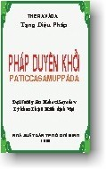

BuddhaSasana
Home Page
This document is written in Vietnamese, with Unicode
Times font
|  |
Theravàda Pháp Duyên KhởiPaticcasamuppàda Nguyên tác:
Ðại Trưởng Lão Mahàsi Sayadaw |
Ðại đức Minh Huệ có gửi tặng tôi bản thảo quyển kinh "Pháp Duyên Khởi" do Ðại đức phiên dịch từ bản tiếng Anh của Aye Maung, được biên soạn và diễn giải từ ngài Mahàsi Sayadaw, một bậc Ðại Trưởng lão Tăng già xứ Miến Ðiện, với lời đề nghị tôi hoan hỉ viết lời giới thiệu về quyển kinh qua sự phiên dịch của Ðại đức, để chư tôn Ðức Tăng Ni và chư quý Phật tử xa gần xem đọc và tham cứu. Nhận lấy quyển kinh, tôi thật ngần ngại trước lời đề nghị của Ðại đức và cũng khó từ chối vì thiển nghĩ: điều gì mình chưa làm được cho Ðạo Pháp mà pháp hữu làm được và cậy nhờ mình hỗ trợ, thì tại sao lại không sách tấn khích lệ pháp hữu nhiệt tâm phụng sự cho sự nghiệp hoằng dương Phật pháp... Nơi đây, điều mà tôi rất ngần ngại đấy là tựa đề và nội dung của quyển kinh "Pháp Duyên Khởi". Mặc dù, trước đây tôi từng được học, được xem và nghiên cứu qua kinh điển, qua bao dịch phẩm của các soạn giả, nhưng căn cơ đi đôi cùng với sự hiểu biết về pháp môn này vẫn còn hạn hữu, mà lời giới thiệu cần cẩn trọng trong sự hiểu biết. "Pháp Duyên khởi" còn được gọi là "Lý duyên khởi" hay "Pháp tùy thuộc phát sinh" hoặc "Pháp nhân quả liên quan" và người ta thường gọi chung là "Thập nhị nhân duyên". Ðây là Pháp do chính chư Phật Chánh đẳng chánh giác chứng ngộ chứng đạt và khai thị tuyên thuyết minh hiển... đến nhân thiên hữu duyên với đạo mầu giải thoát. Trải qua hơn hai ngàn năm lịch sử truyền bá đạo Phật, các bậc cao Tăng thạc đức thánh phàm đã y giáo phụng hành chánh pháp và tùy vào trình độ uyên thâm pháp môn cao quý này, các ngài đã và đang tiếp nối nhau làm nhiệm vụ "tác Như Lai sứ, hành Như Lai sự" quảng bá giáo lý duyên khởi đến người hữu duyên tầm đạo và học đạo bằng những phương tiện có được như thuyết giảng, biên soạn, dịch thuật...và ngài Mahàsi Sayadaw là một trong những bậc cao Tăng thạc đức ấy. Bên cạnh đó, với nhịp độ tiến hóa của nhân loại mỗi lúc mỗi cao rộng trên bình diện tư tưởng và nhận thức về nhân sinh quan và vũ trụ quan trong cuộc sống, tất cả đã minh chứng và khẳng định được giáo lý đạo Phật là thực thể và thực dụng cho nếp sống con người trên cả hai mặt vật chất lẫn tinh thần, nhất là góp phần đem lại sự bình yên cho đời sống tâm linh con người đối trước quy luật biến thiên của giòng đời, mà pháp môn Duyên khởi là điển hình. Trung thành với thánh điển Nguyên thủy đã được chư Phật giảng giải về pháp môn Duyên khởi, các bậc thuyết giảng, biên soạn và dịch thuật... đã tùy theo trình độ căn cơ của người học Phật hoặc tham cứu, mà trình bày có thấp có cao, có đơn giản có chi tiết hoặc dẫn chứng tình tiết cụ thể nhằm giúp người xem học liễu ngộ giáo lý thâm diệu này. Mong rằng mỗi chúng ta được nhân duyên xem đọc quyển kinh Pháp duyên khởi, sẽ lãnh hội được ít nhiều đạo mầu giải thoát của chư Phật và đấy cũng là điều mong ước hoan hỉ nơi dịch giả. Trong niềm hoan hỉ, tôi xin trân trọng giới thiệu dịch phẩm này đến quý vị Pháp quang Tự, ngày
5.12.1999 --oOo-- Namo Buddhàya. Xin thành kính tán dương
Ðức Phật toàn tri. Thưa quí vị, Một bản chú giải mà khiến người đọc càng lúng túng thì đó không phải là chú giải. Ở đây, tập sách giảng giải về pháp Duyên Khởi của Ngài Mahàsi Sayadaw quả thật dễõ hiểu, rõ ràng, với nhiều ví dụ cụ thể. Tôi hy vọng rằng độc giả có thể dễ dàng lãnh hội. Ðây là bài pháp rất cao siêu, có khả năng đánh tan mọi tà kiến, giúp người tu Phật đặt niềm tin vững chắc vào cứu cánh -- Niết bàn giải thoát. Suốt hai chục năm xuất gia cầu đạo, tôi hiểu rất mơ hồ về pháp này. Nhưng nhờ lối giảng giải bình dân và dễ hiểu của Thiền sư uyên bác Mahàsi sayadaw, tôi đã lĩnh hội được rất nhiều. Vì vậy tôi đã mạo muội dịch quyển sách này. Do đó, tôi dám nói rằng quí vị nào đọc và hiểu bài pháp này thì xem như đã học pháp được hai chục năm, nếu đọc một ngàn lần thì trí tuệ cũng tăng lên ngàn lần. Chúc quí vị mau chóng lãnh hội được pháp duyên khởi này. Có một đoạn kinh trong bộ Diệu Pháp Liên Hoa của Bắc Tạng nói rằng: Có một đứa con được cha mẹ để lại viên ngọc quí trong lai áo mà cứ mãi đi lang thang từ nhà này sang nhà nọ để xin ăn. Cuối cùng, một người có trí đã chỉ cho thấy viên ngọc ấy. Viên ngọc là pháp duyên khởi, bậc trí tuệ là Trưởng lão Mahàsi sayadaw, và dĩ nhiên, Ðức Phật là chủ nhân đầu tiên của viên ngọc. Xin thành kính tri ân Trưởng lão Mahàsi Sayadaw, một bậc thầy có tâm từ bi rộng lớn trong thế hệ của chúng ta. Xin tri ân Ðại đức Tăng Ðịnh đã tạo điều kiện giúp đỡ cho dịch phẩm được hoàn thành một cách tốt đẹp. Dịch giả xin chân thành ghi nhận công đức:
Nguyện cầu phước báu phát sinh trong công tác phiên dịch này thấu đến tất cả chư thiên và nhân loại. Cầu mong cho tất cả chúng sanh sớm chấm dứt sinh tử luân hồi. Mong thay! -ooOoo- [xem bản dịch Anh ngữ] |
Chân thành cám ơn Tỳ
kheo Thiện Minh, Chùa Kỳ Viên, Quận 3, Sài Gòn,
đã gửi tặng phiên bản vi tính. (Bình Anson, 03-2001)
update: 01-03-2001